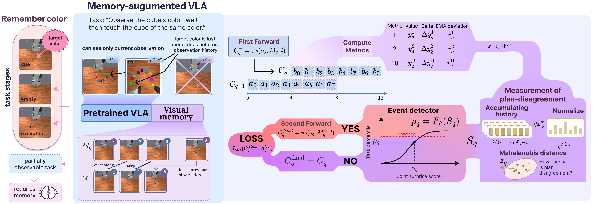

RePlanMemPlanning-Guided Visual Keyframe Memory for Vision-Language-Action Models
Summary Video
Abstract
Long-horizon, multi-stage Vision-Language-Action (VLA) policies often require visual information that is no longer present in the current observation. Retaining the complete observation history is computationally expensive and highly redundant, motivating selective visual memory. We introduce RePlanMem-VLA (Replanning-Guided Keyframe Memory for VLA), which turns a policy's own plan revisions into an online memory-write signal. Under receding-horizon execution, consecutive action chunks predict some of the same future actions. RePlanMem-VLA treats unusually large disagreement between these temporally aligned predictions as evidence of a task-relevant event. We first compare 35 disagreement measures across single-task decoder-only and Flow-Matching Transformers trained from scratch, then validate the selected signals on pretrained OpenVLA-OFT and π0.5 policies over MIKASA-Robo-VLA tasks. The resulting detectors achieve ROC-AUC of 0.981–0.997. We then use the selected signals in RePlanMem-VLA to trigger updates to a bounded visual memory, with a robot-masked write filter suppressing redundant frames. In the evaluated memory-retention experiments, RePlanMem-VLA preserves task-relevant observations until the later decision point in 100% of episodes. Real-robot replay data further show that event selection and redundancy suppression extend beyond simulation. These results establish plan revision as a policy-internal signal for controlling what a VLA remembers.
Method

In long-horizon manipulation, task-relevant visual information often leaves the cameras before it is needed. A policy that sees only the current frame cannot recover that cue, so we concatenate the live views with a bounded visual memory of B slots. Slots are empty at the start of an episode and are never carried across episode boundaries. The policy predicts a chunk of K actions from one observation and executes only the first H < K before replanning, so consecutive chunks overlap on K−H future steps: the same intended actions, predicted before and after the new frame. Prior work treats disagreement on that overlap as noise to suppress. We read a large revision as evidence that the new observation was task-relevant and use it to trigger a memory-update proposal. The direct update rule stores the immediately preceding frame, whereas the redundancy-aware variant retains only visual states that are not already represented in memory. Figures 1 and 3 and Algorithm 1 summarize the procedure. At every query the policy first predicts a pre-write chunk from the memory available before a potential write, then overlap disagreement is converted, without gradients, into a task-calibrated surprise score and an event triggers frame selection and a memory update only when a visually novel state is found. The final action prediction is conditioned on the resulting memory state, and only this prediction receives the original supervised fine-tuning (SFT) objective. Event detection never sees expert actions, so memory writes are driven only by the policy’s own plan revisions.
Interactive Memory Replay
A real successful episode: 24 policy queries, two detected events, and two memory writes.